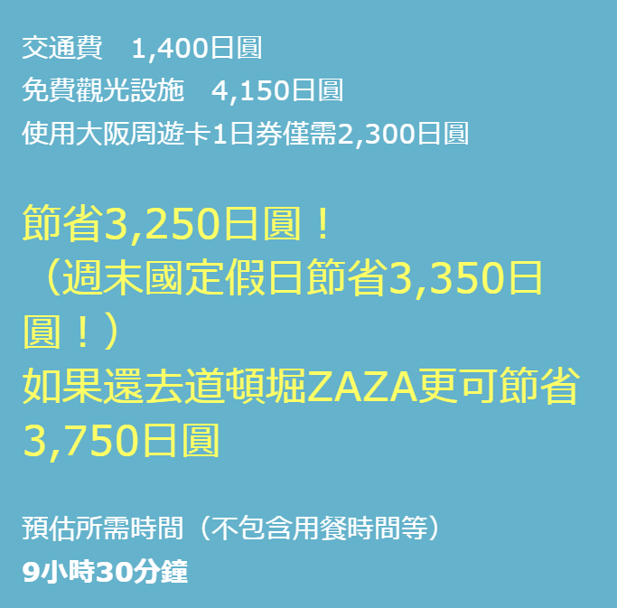
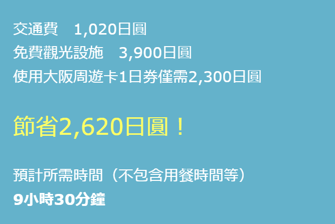

28個景點 X 台灣人搜尋量熱門排行 X TOP10
wow!你省了這麼多

盡享優惠的水上巡遊路線
| 雞波站 |
| 本町站 |
| 大阪港站 |
| 帆船型遊船 聖瑪利亞號 (通常1600元) |
| 天保山大摩天輪（通常800日圓） |
| 大阪港站 |
| 谷町四丁目站 |
| 大阪城天守閣（通常600日圓） |
| 大阪水上巴士Aqua-Liner（通常1,700日圓) |
| 大阪商務園區站 |
| 心齋橋站 |
| 難波站 |
| 道頓堀水上觀光船（通常900日圓） |
| 難波站 |
wow!你省了這麼多
THE・經典！ 觀光景點環遊路線
| 雞波站 |
| 日本橋站 |
| 惠美須町站 |
| 通天閣（通常700日圓） *新世界、將將小巷觀光 |
| 動物園前站 |
| 難波站 |
| 道頓堀水上觀光船（通常900日圓） *如果有空餘時間還可以去道頓堀ZAZA （ONE COIN曲藝場500日圓） |
| 難波站 |
| 谷町九丁目站 |
| 谷町四丁目站 |
| 大阪城天守閣（通常600日圓） ※16:30停止入場 |
| 谷町四丁目站 |
| 東梅田站 |
| HEP FIVE 摩天輪（通常500日圓） |
| 空中庭園展望台（通常800日圓）） |
| 西梅田站 |
| 住之江公園站 |
| 天然露天溫泉 SPA住之江 （平日650日圓、週末國定假日750日圓） |
| 住之江公園站 |
| 難波站 |
wow!你省了這麼多
瞭解大阪歷史與今日的路線
| 東梅田站 |
| 天神橋筋六丁目站 |
| 大阪生活今昔館（大阪市立人居博物館）（常設展600日圓） |
| 天神橋筋六丁目站 |
| 谷町四丁目站 |
| 帆船型遊船 聖瑪利亞號 (通常1600元) |
| 大阪歷史博物館（常設展600日圓） |
| 大阪城天守閣（通常600日圓） |
| 谷町四丁目站 |
| 四天王寺前夕陽丘站 |
| 四天王寺 （中心伽藍、本坊庭園 參觀兩者的情況： 通常600日圓） |
| 四天王寺前夕陽丘站 |
| 天王寺站 |
| 動物園前站 |
| 通天閣（通常700日圓） *新世界、將將小巷觀光） |
| 惠美須町站 |
| 動物園前站 |
| 梅田站 |
| 空中庭園展望台（通常800日圓） |
| 梅田站 |